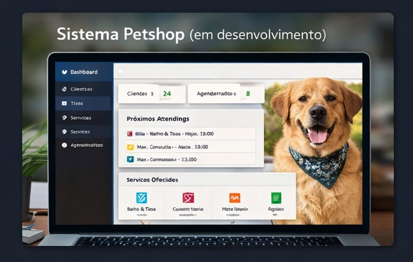
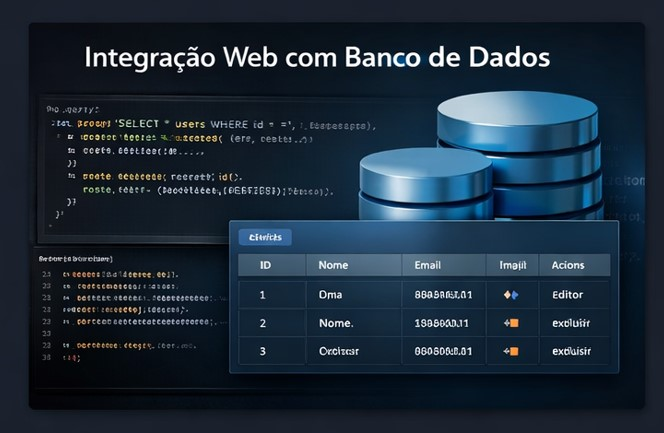
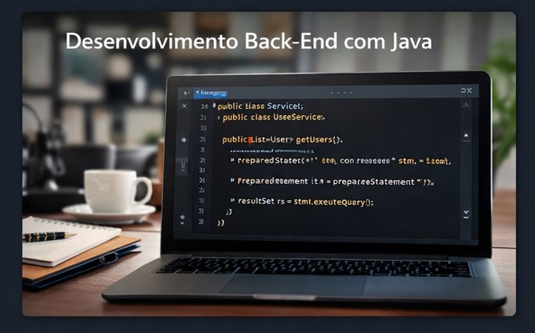

Olá, eu sou
Construindo aplicações web completas, unindo código limpo, boas práticas e experiências digitais modernas.
Sou estudante de Desenvolvimento Full Stack, com início na área em 2024, focado na construção prática de aplicações web. Tenho desenvolvido projetos acadêmicos e pessoais envolvendo integração com banco de dados, autenticação de usuários e organização de código seguindo padrões como MVC.
Possuo experiência com JavaScript, HTML, CSS e Node.js, além de já ter trabalhado com Sequelize e estruturação de APIs. Busco evoluir constantemente não apenas na prática, mas também na compreensão de conceitos como organização de código, boas práticas e arquitetura.

Aplicação full stack para gerenciamento de petshop, incluindo cadastro de clientes, serviços e organização de atendimentos. Projeto pessoal em evolução, focado em consolidar conhecimentos práticos de desenvolvimento web.

Projeto acadêmico focado na integração entre aplicações web e banco de dados, abordando operações CRUD e manipulação de dados em ambiente backend.

Projeto acadêmico voltado ao desenvolvimento backend utilizando Java, com foco em lógica de programação, organização de código e estrutura de aplicações.
Projeto acadêmico com foco em desenvolvimento backend em contexto corporativo, explorando conceitos de aplicações escaláveis e integração com tecnologias em nuvem.
Tecnologias utilizadas no desenvolvimento de aplicações web modernas, com foco em performance e boas práticas.
Estou disponível para novos projetos e oportunidades. Entre em contato e vamos conversar!